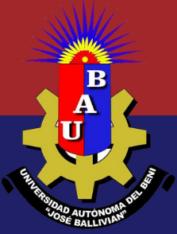

|  | UNIVERSIDAD AUTÓNOMA DEL BENI “JOSÉ BALLIVIÁN” FACULTAD DE CIENCIAS ECONÓMICAS CARRERA DE ADMINISTRACIÓN DE EMPRESAS ASIGNATURA: SOCIOLOGÍA GENERAL - 1er. ciclo paralelo B |
|---|
Sociedad, Economía y Empresa
Relación entre Sociedad y Economía
La relación entre sociedad y economía es bidireccional, ambas dimensiones se influyen mutuamente y están interconectadas en varios niveles que se describen a continuación:
Ciclo económico circular.
Importancia de las empresas para la economía
Las empresas desempeñan un papel fundamental en la economía de cualquier país y aportan a la sociedad y la economía de varias maneras:
Empresas y desigualdad
Aunque las empresas son fundamentales para la economía, también pueden contribuir a la desigualdad socioeconómica de varias maneras:
Responsabilidad social y ambiental de las empresas
Es importante destacar el creciente número de empresas que adoptan prácticas responsables y promueven la equidad y la inclusión social. Cada vez más, las empresas están adoptando enfoques que promueven la responsabilidad social corporativa, la protección del medio ambiente, la equidad y el bienestar de los empleados. Estas prácticas no solo benefician directamente a la sociedad, sino que también pueden mejorar la imagen y la reputación de las empresas, mejorarando sus ventajas competitivas y generando lealtad de los consumidores.
La fortuna en la base de la pirámide
En 2004, el especialista en estrategia corporativa C. K. Prahalad propuso que las corporaciones amplíen su área de acción a los sectores más pobres de la sociedad, cuestionando las creencias de que los pobres no pueden ser considerados como clientes potenciales porque no pueden pagar ni utilizar los productos y servicios que se venden en los mercados desarrollados. Se creía que las estructuras de costos de las corporaciones no permitían competir de manera rentable por ese mercado, por lo que era mejor dejar a este segmento en manos del gobierno y organizaciones sin fines de lucro.
En sus libros "La Fortuna en la Base de la Pirámide" (2004), y "La oportunidad de negocios en la base de la pirámide" (2006), C. K. Prahalad afirma que los sectores más pobres de la población mundial constituyen una enorme base en la pirámide de riqueza. Dada la gran magnitud de las poblaciones pobres, existen en ellas un gran potencial de consumo y una gran oportunidad de negocios para las empresas. Asimismo, Prahalad afirma que los pobres son emprendedores resilientes y creativos, así como consumidores que exigen valores y propone realizar trabajos conjuntos entre las empresas, las organizaciones de la sociedad civil y los gobiernos locales, para crear nuevos modelos comerciales adaptados a estos mercados, contribuyendo a la reducción de la pobreza. Un resultado de la propuesta de Prahalad y otros investigadores ha sido la elaboración de un "Protocolo de la Base de la Pirámide", una guía para que las empresas desarrollen asociaciones comerciales con comunidades de bajos ingresos, mediante procesos de "co-creación de negocios y mercados que beneficien tanto a las empresas como a las comunidades.
Las principales conclusiones de la propuesta de Prahalad son: a) que la base de la pirámide, los pobres, constituyen un mercado; b) la manera de atender ese mercado requiere de una gama de innovaciones en productos, servicios, procesos y comercialización y en los modelos empresariales; c) tales innovaciones deben estar acompañadas de una institucionalidad en la cual el Gobierno sea el responsable de garantizar la transparencia de los contratos comerciales y el acceso y el respeto a ellos y, d) cuando los consumidores de la base de la pirámide tengan la oportunidad de participar y beneficiarse en la elección de productos y servicios, la transformación social y económica podrá ser muy rápida.
Una de las iniciativas de la base de la pirámide fue el programa de microcrédito implementado por Muhammad Yunus, Economista de Bangladesh, innovador y Fundador del Banco Grameen (1983) quien recibió el Premio Nobel de la Paz en 2006 por su labor social. Yunus también fué un gran promotor de las empresas sociales.
Empresas sociales
Las empresas sociales representan un nuevo paradigma para erradicar la pobreza en el mundo, dentro de un modelo de mercado que respeta la dignidad humana (Mora, 2015). Las personas que crean una empresa social pueden ser llamadas emprendedores sociales.
El propósito de las empresas sociales –según Yunus– es ayudar a las personas a salir de la pobreza extrema mediante el fomento del espíritu emprendedor y de la dignidad humana. Una empresa social es una organización creada con el objetivo primario de resolver un problema social, ambiental, sanitario o similar, y con el objetivo paralelo y secundario de generar ingresos suficientes para ser sostenible en el tiempo.
Tipos de empresas según su enfoque social y económico
La empresa social tiene un principio ético: el de tratar a las personas pobres como clientes emprendedores y no como mendigos. Yunus ha afirmado que la caridad o la asistencia social pueden ser tan dañinas como no hacer nada, ya que “la limosna es la mayor ofensa que se le puede hacer a un pobre” (Yunus, 2010). La idea es que promover el emprendurismo y no la caridad es el camino de la empresa social para superar la pobreza.
Ejemplos de empresas sociales
Como primer ejemplo, se puede citar la experiencia de M. Yunus otorgando microcréditos de 20 a 30 dólares para crear negocios en Bangladesh. Estos microcréditos se orientan hacia los más pobres y hacia las mujeres. Se otorgan sin pedir garantías y evitando la burocracia. Esta iniciativa fue tan exitosa que para el año 2006 se habían otorgado microcréditos a 100 millones de prestatarios, beneficiando a más de 500 millones de personas. El impacto social de los microcréditos en Bangladesh y otros países es evidente, porque ha generado mayor acceso a la educación, mejora en la condición de las mujeres, reducción de la tasa de natalidad, mejores condiciones de vivienda y salud, aumento del nivel de salarios y mayor estabilidad político-social (Mora, 2015)
Existen actualmente numerosos ejemplos de organizaciones emprendedoras sociales:
LITERATURA
Mora C. René. 2015. "La empresa social de Muhammad Yunus, un nuevo paradigma para erradicar la pobreza". Economía y Sociedad, Vol. 20, No 47, pp. 1-18. Disponible en: https://www.researchgate.net/publication/282965582_La_empresa_social_de_Muhammad_Yunus_un_nuevo_paradigma_para_erradicar_la_pobreza
Prahalad, C.K. 2004. Fortune at the bottom of the Piramid. Erradicating poverty through profits. USA. Resumen disponible en Web: https://docplayer.es/17724793-La-oportunidad-de-negocios-en-la-base-de-la-piramide.html
Prahalad, C.K. 2006. La oportunidad de negocios en la base de la pirámide. Un modelo de negocio rentable que sirve a las comunidades más pobres. Resumen de Jorge Enrique Bueno Orozco. Revista de economía & administración, vol. 6 no. 2. Julio - diciembre 2009 Colombia. Disponible en Web: https://www.librerianorma.com/images/dinamicas/capitulos/Guia_La_oportunidad.pdf
Yunus, M. 2010. "Building Social Business. The new kind of capitalism that Serves Humanity's most Pressing Needs". New York, USA. 121 p. Disponible en Web: http://socialnaekonomija.si/wp-content/uploads/Social-buiseness-Muhammad-Yunus-Karl-Weber-2010.compressed.pdf